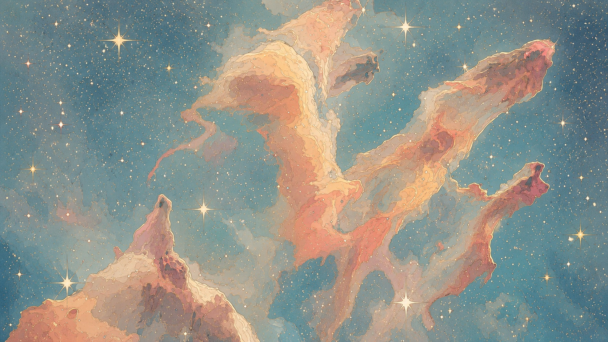

CAPIVARA groups spaxels by spectral similarity and maps them back onto the galaxy. In five MaNGA systems, the recovered regions were coherent in continuum and emission-line properties without imposing a bulge–disc decomposition.
Astrophysicist
Founder and Co-Chair of the Cosmostatistics Initiative (COIN); Chair of the ISI Astrostatistics Special Interest Group.
I study what astronomical observations can distinguish when information is incomplete, selectively sampled, compressed, or structured across wavelength and position.

CAPIVARA groups spaxels by spectral similarity and maps them back onto the galaxy. In five MaNGA systems, the recovered regions were coherent in continuum and emission-line properties without imposing a bulge–disc decomposition.

Spectral lines with similar widths can differ in absorption, asymmetry and the ordering of their components. spectropath describes these differences through a path in velocity–flux space.

Twenty-five star-forming regions trace a narrow structure about one kiloparsec long, inclined by approximately 56 degrees to the Galactic azimuth.

Joseph M. Hilbe, Rafael S. de Souza and Emille E. O. Ishida
Cambridge University Press, 2017.
PROSE Award, 2018.
I founded the Cosmostatistics Initiative in 2014. At its residences, small groups live and work together on astronomical and statistical problems.

The hour arrives.
Rain has passed.
The air is cool and shimmering with ions.
Beyond the Rainbow
Xuenan Cao and Rafael S. de Souza

We compared a 1936 forest map with later maps to study the expansion of invasive black locust and native forests in Italian municipalities.